De una imagen a assets de juego, en tu PC From one image to game assets, on your PC
Todo lo de esta página salió del pipeline, sin retoques: imagen con IA, malla 3D, rig, animación y render a sprites isométricos. Cris, la protagonista del proyecto, en su taller. Everything on this page came out of the pipeline, untouched: AI image, 3D mesh, rig, animation and render to isometric sprites. Cris, the project's main character, in her workshop.
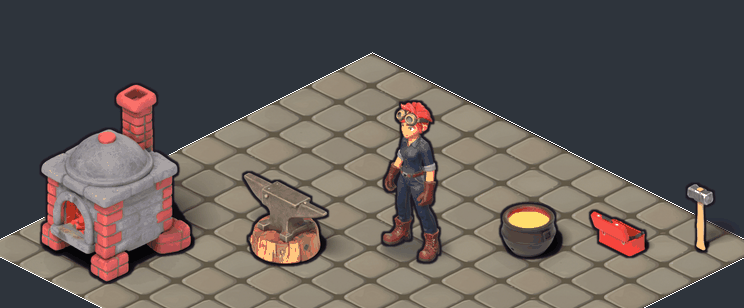
Cris
Personaje animado: 15 animaciones en 8 direcciones, listas para Godot. Animated character: 15 animations in 8 directions, ready for Godot.
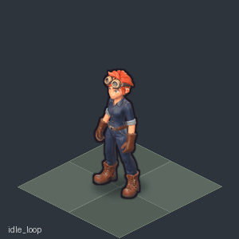
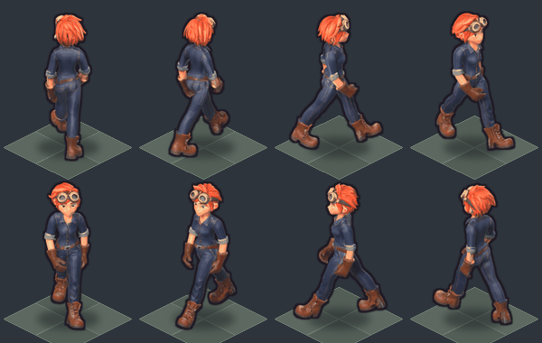
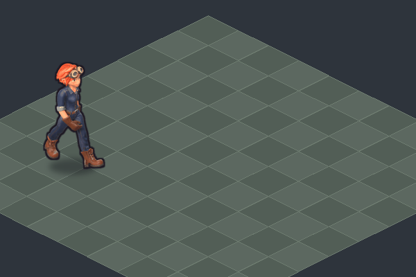
Z-Image Turbo → Qwen Image Edit → Pixal3D (4 vistas) + UltraTex → rig y animación en Blender. Z-Image Turbo → Qwen Image Edit → Pixal3D (4 views) + UltraTex → rig and animation in Blender. no comercial (UltraTex)non-commercial (UltraTex)
ObjetosProps
Props isométricos en 4 direcciones, con su huella de colisión para Godot. Isometric props in 4 directions, with their collision footprint for Godot.
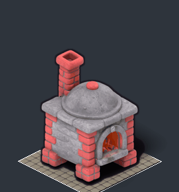
comercialcommercial
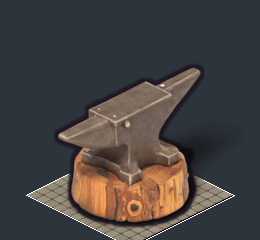
no comercialnon-commercial
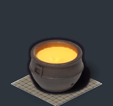
no comercialnon-commercial
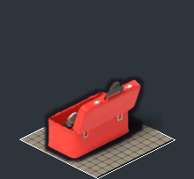
no comercialnon-commercial
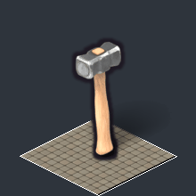
comercialcommercial
VehículosVehicles
Para juegos 3D: un .glb con la carrocería y las cuatro ruedas como nodos aparte, listas para girar. For 3D games: a .glb with the body and the four wheels as separate nodes, ready to spin.
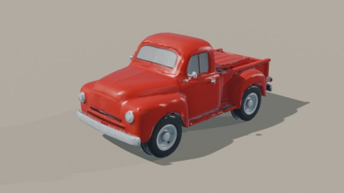
no comercialnon-commercial
EscenariosScenery
Texturas repetibles de piso, camino y pared (y un telón de fondo), con los colores del tema. Tileable floor, path and wall textures (and a backdrop), with the theme colors.
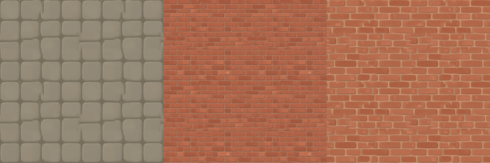
comercialcommercial
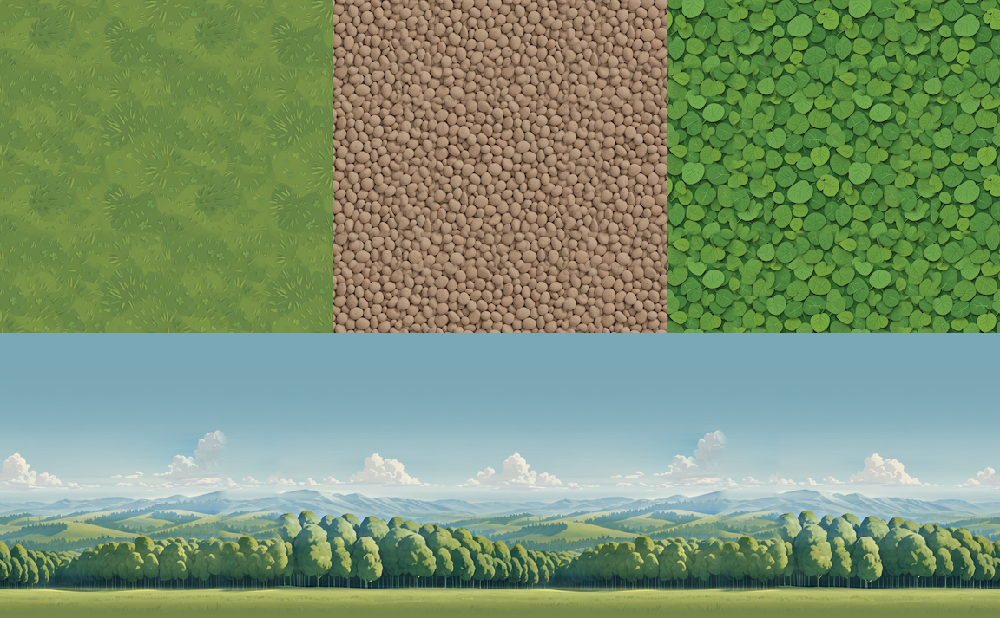
comercialcommercial